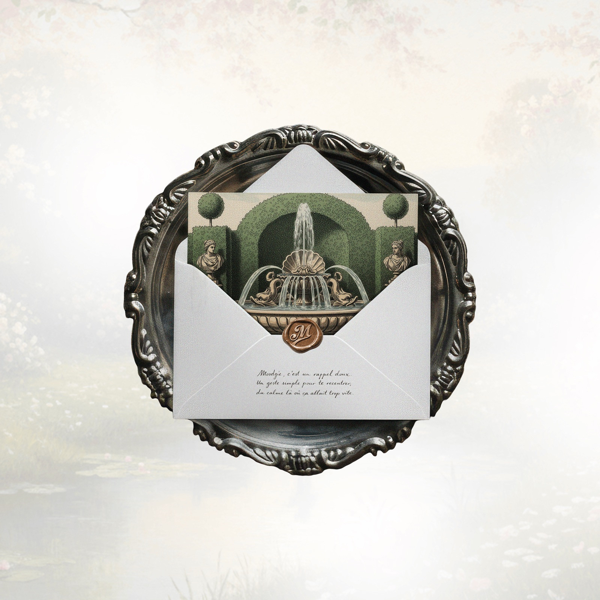
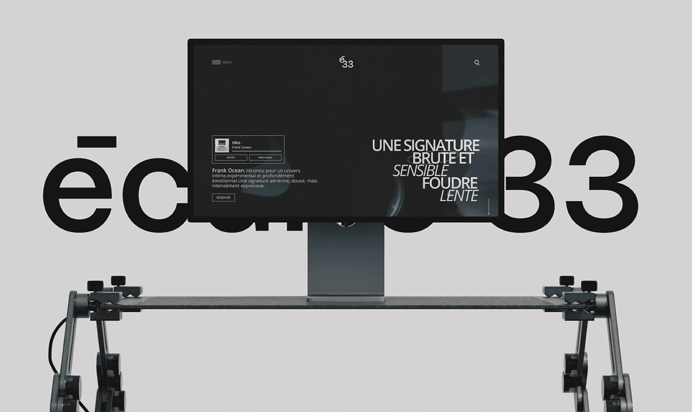
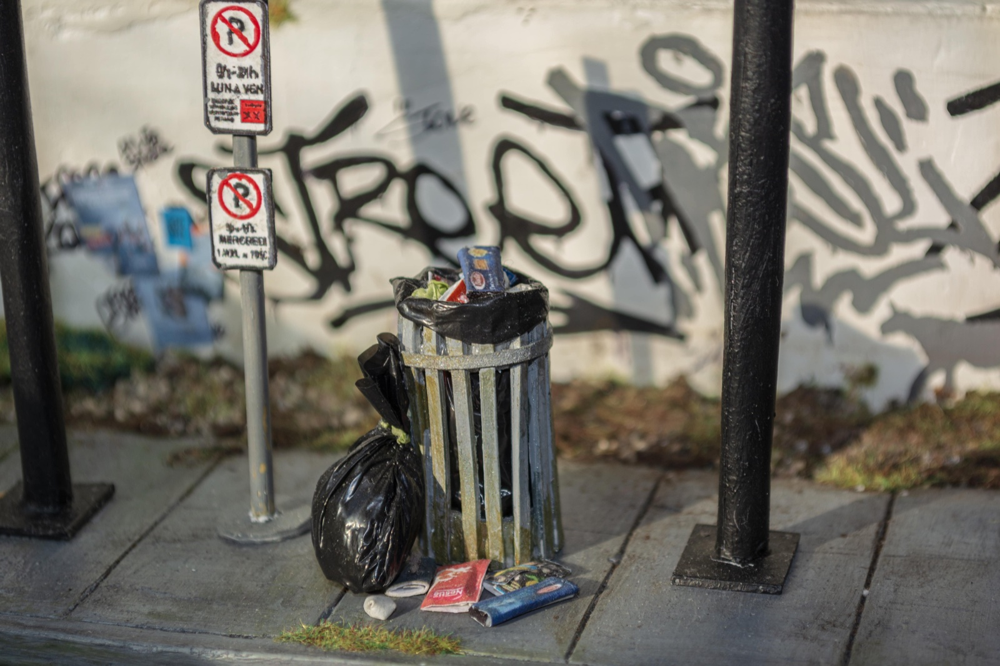
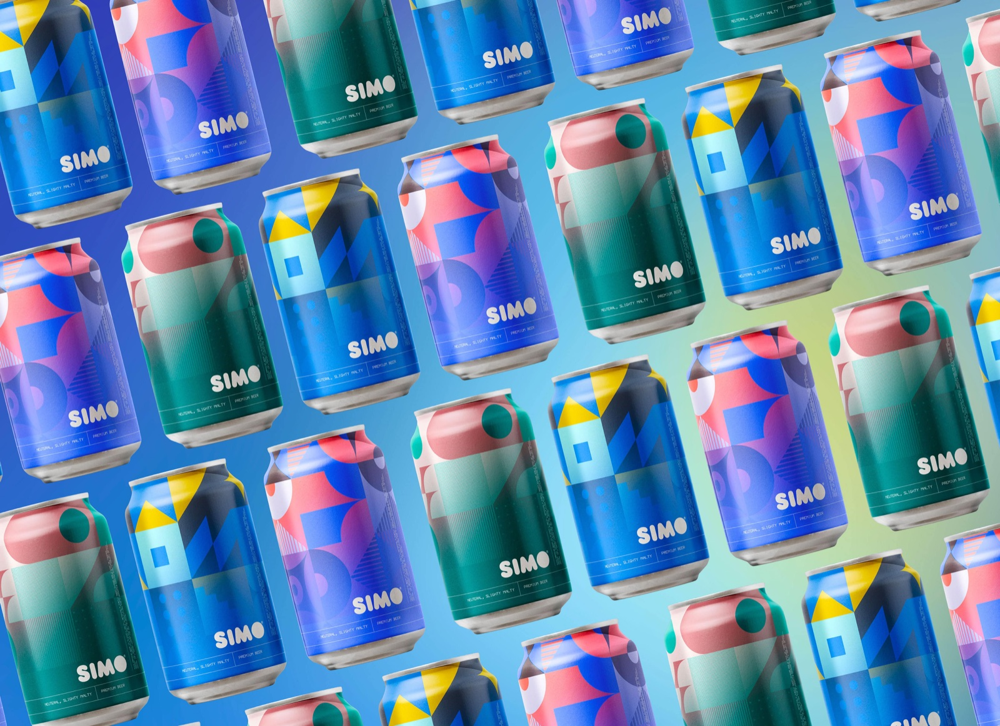
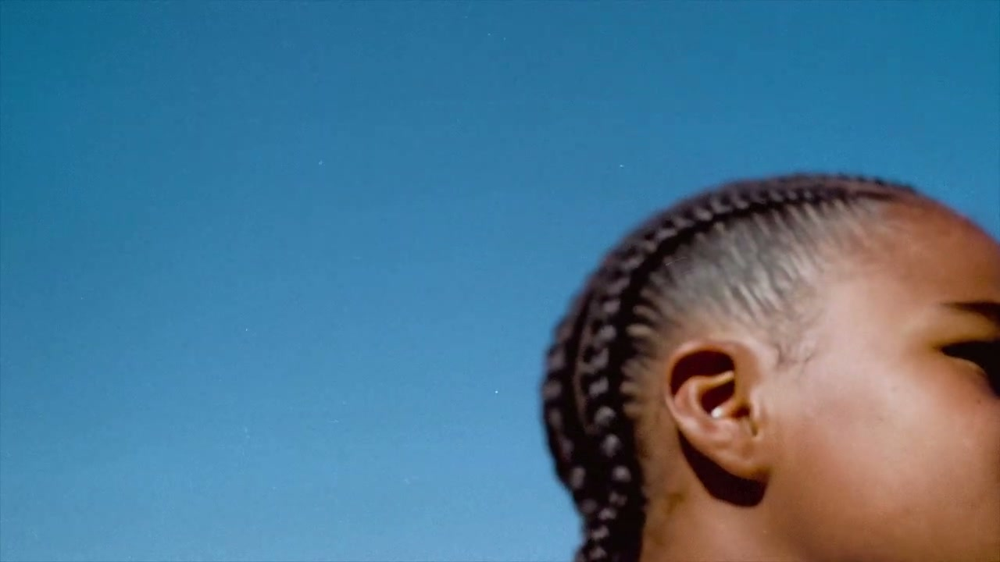
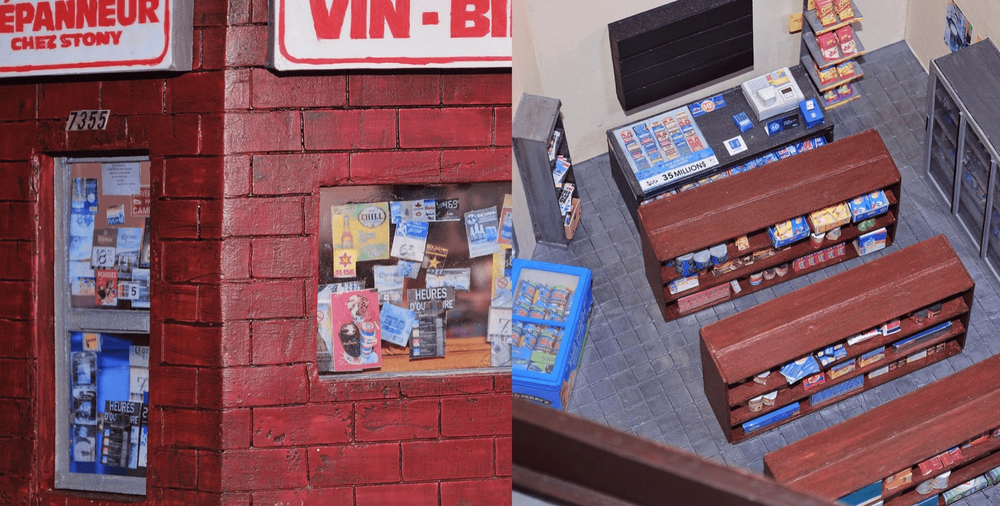

Moodgie
Packaging bougies premium

Écurie 33
Breathing new life into an organic market

Tempo Dolce
Packaging design, Brand identity

The Bus
Œuvre miniature

Simo
Weaving artisan stories into a global brand

Azzedine Alaïa
Mini-documentaire & Motion Design

Virgil was here
Kinetic Animation

Chez Stony
Reproduction miniature d'un dépanneur montréalais